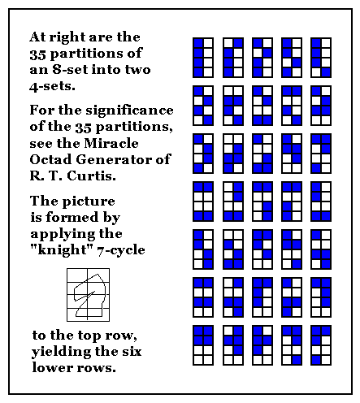
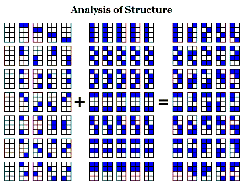
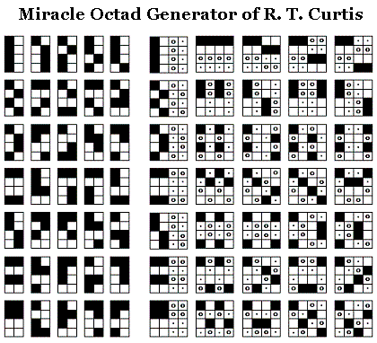

Related web
pages:
Miracle
Octad Generator,
Generating
the
Octad Generator,
Geometry
of the
4×4 Square
Related
folklore:
"It is commonly known that there is a bijection between the 35 unordered triples of a 7-set [i.e., the 35 partitions of an 8-set into two 4-sets] and the 35 lines of PG(3,2) such that lines intersect if and only if the corresponding triples have exactly one element in common." –"Generalized Polygons and Semipartial Geometries," by F. De Clerck, J. A. Thas, and H. Van Maldeghem, April 1996 minicourse, example 5 on page 6
The Miracle Octad Generator may be regarded as illustrating the folklore.
Update of August 20, 2010--
For facts rather than folklore about the above bijection, see The Moore Correspondence.